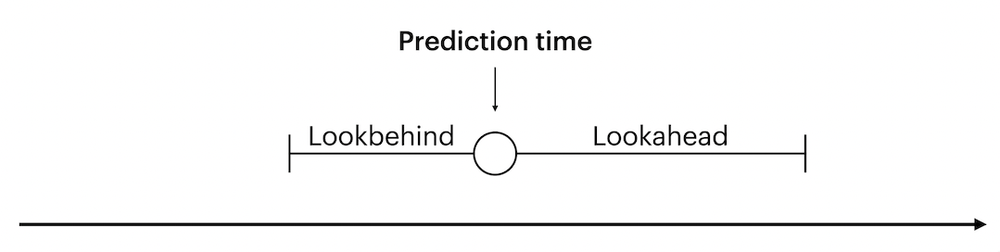
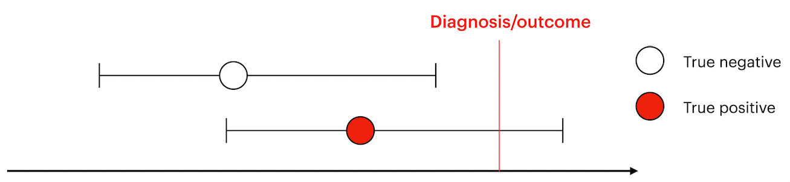
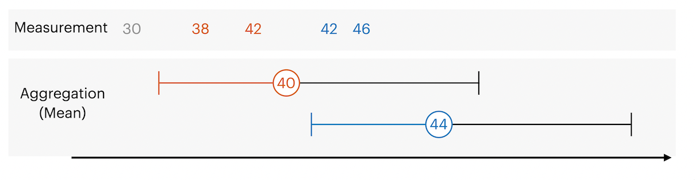
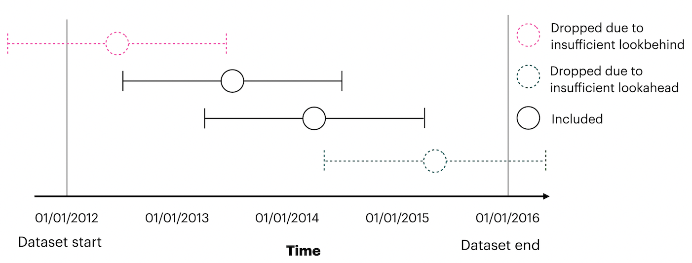

Introductory Tutorial#
TimeseriesFlattener flattens timeseries. This is especially helpful if you have complicated and irregular time series but want to train simple models.
We explain terminology as needed in this tutorial. If you need a reference, see the docs.
Applying it consists of 3 steps:
Loading data (prediction times, predictor(s), and outcome(s))
Specifying how to flatten the data and
Flattening
The simplest case is adding one predictor and one outcome.
First, we’ll load the timestamps for every time we want to issue a prediction:
Loading data#
Loading prediction times#
Predictin times consist of two elements:
The entity id. This is the entity about which the prediction is issued. In medical contexts, this is frequently a patient.
The timestamp at which the prediction is to be issued.
from skimpy import skim
from timeseriesflattener.testing.load_synth_data import load_synth_prediction_times
df_prediction_times = load_synth_prediction_times()
skim(df_prediction_times)
df_prediction_times.sort_values(by=["entity_id"])
╭──────────────────────────────────────────────── skimpy summary ─────────────────────────────────────────────────╮ │ Data Summary Data Types │ │ ┏━━━━━━━━━━━━━━━━━━━┳━━━━━━━━┓ ┏━━━━━━━━━━━━━┳━━━━━━━┓ │ │ ┃ dataframe ┃ Values ┃ ┃ Column Type ┃ Count ┃ │ │ ┡━━━━━━━━━━━━━━━━━━━╇━━━━━━━━┩ ┡━━━━━━━━━━━━━╇━━━━━━━┩ │ │ │ Number of rows │ 10000 │ │ int64 │ 1 │ │ │ │ Number of columns │ 2 │ │ datetime64 │ 1 │ │ │ └───────────────────┴────────┘ └─────────────┴───────┘ │ │ number │ │ ┏━━━━━━━━━━━━━━━━━━━━┳━━━━━━┳━━━━━━━━━┳━━━━━━━━━┳━━━━━━━━━┳━━━━━━┳━━━━━━━━━┳━━━━━━━━━┳━━━━━━━━━━━┳━━━━━━━━━━━┓ │ │ ┃ column_name ┃ NA ┃ NA % ┃ mean ┃ sd ┃ p0 ┃ p25 ┃ p75 ┃ p100 ┃ hist ┃ │ │ ┡━━━━━━━━━━━━━━━━━━━━╇━━━━━━╇━━━━━━━━━╇━━━━━━━━━╇━━━━━━━━━╇━━━━━━╇━━━━━━━━━╇━━━━━━━━━╇━━━━━━━━━━━╇━━━━━━━━━━━┩ │ │ │ entity_id │ 0 │ 0 │ 5000 │ 2900 │ 0 │ 2500 │ 7400 │ 10000 │ █████▇ │ │ │ └────────────────────┴──────┴─────────┴─────────┴─────────┴──────┴─────────┴─────────┴───────────┴───────────┘ │ │ datetime │ │ ┏━━━━━━━━━━━━━━━━━━┳━━━━━━┳━━━━━━━━━┳━━━━━━━━━━━━━━━━━━━━━━━━━━━━┳━━━━━━━━━━━━━━━━━━━━━━━━━━━━┳━━━━━━━━━━━━━━┓ │ │ ┃ column_name ┃ NA ┃ NA % ┃ first ┃ last ┃ frequency ┃ │ │ ┡━━━━━━━━━━━━━━━━━━╇━━━━━━╇━━━━━━━━━╇━━━━━━━━━━━━━━━━━━━━━━━━━━━━╇━━━━━━━━━━━━━━━━━━━━━━━━━━━━╇━━━━━━━━━━━━━━┩ │ │ │ timestamp │ 0 │ 0 │ 1965-01-02 09:35:00 │ 1969-12-31 21:42:00 │ None │ │ │ └──────────────────┴──────┴─────────┴────────────────────────────┴────────────────────────────┴──────────────┘ │ ╰────────────────────────────────────────────────────── End ──────────────────────────────────────────────────────╯
| entity_id | timestamp | |
|---|---|---|
| 628 | 0 | 1969-01-11 09:55:00 |
| 2005 | 1 | 1965-03-15 07:16:00 |
| 4370 | 2 | 1969-09-13 23:18:00 |
| 6152 | 3 | 1968-02-04 16:16:00 |
| 6873 | 4 | 1965-01-28 12:33:00 |
| ... | ... | ... |
| 9688 | 9996 | 1965-07-18 17:12:00 |
| 1463 | 9996 | 1965-01-30 17:19:00 |
| 3952 | 9997 | 1967-06-08 07:52:00 |
| 7926 | 9999 | 1968-02-07 22:24:00 |
| 5720 | 9999 | 1965-07-19 14:59:00 |
10000 rows × 2 columns
Here, “entity_id” represents a patient ID and “timestamp” refers to the time when we want to issue a prediction. Note that each ID can have multiple prediction times.
Loading a temporal predictor#
Then, we’ll load the values for our temporal predictor. Temporal predictors are predictors that can have a different value at different timepoints.
from timeseriesflattener.testing.load_synth_data import load_synth_predictor_float
df_synth_predictors = load_synth_predictor_float()
skim(df_synth_predictors)
df_synth_predictors.sort_values(by=["entity_id"])
╭──────────────────────────────────────────────── skimpy summary ─────────────────────────────────────────────────╮ │ Data Summary Data Types │ │ ┏━━━━━━━━━━━━━━━━━━━┳━━━━━━━━┓ ┏━━━━━━━━━━━━━┳━━━━━━━┓ │ │ ┃ dataframe ┃ Values ┃ ┃ Column Type ┃ Count ┃ │ │ ┡━━━━━━━━━━━━━━━━━━━╇━━━━━━━━┩ ┡━━━━━━━━━━━━━╇━━━━━━━┩ │ │ │ Number of rows │ 100000 │ │ int64 │ 1 │ │ │ │ Number of columns │ 3 │ │ datetime64 │ 1 │ │ │ └───────────────────┴────────┘ │ float64 │ 1 │ │ │ └─────────────┴───────┘ │ │ number │ │ ┏━━━━━━━━━━━━━━━━━━━┳━━━━━━┳━━━━━━━━━┳━━━━━━━━━┳━━━━━━━━┳━━━━━━━━━━━━┳━━━━━━━━┳━━━━━━━━┳━━━━━━━━━━┳━━━━━━━━━━┓ │ │ ┃ column_name ┃ NA ┃ NA % ┃ mean ┃ sd ┃ p0 ┃ p25 ┃ p75 ┃ p100 ┃ hist ┃ │ │ ┡━━━━━━━━━━━━━━━━━━━╇━━━━━━╇━━━━━━━━━╇━━━━━━━━━╇━━━━━━━━╇━━━━━━━━━━━━╇━━━━━━━━╇━━━━━━━━╇━━━━━━━━━━╇━━━━━━━━━━┩ │ │ │ entity_id │ 0 │ 0 │ 5000 │ 2900 │ 0 │ 2500 │ 7500 │ 10000 │ ██████ │ │ │ │ value │ 0 │ 0 │ 5 │ 2.9 │ 0.00015 │ 2.5 │ 7.5 │ 10 │ ██████ │ │ │ └───────────────────┴──────┴─────────┴─────────┴────────┴────────────┴────────┴────────┴──────────┴──────────┘ │ │ datetime │ │ ┏━━━━━━━━━━━━━━━━━━┳━━━━━━┳━━━━━━━━━┳━━━━━━━━━━━━━━━━━━━━━━━━━━━━┳━━━━━━━━━━━━━━━━━━━━━━━━━━━━┳━━━━━━━━━━━━━━┓ │ │ ┃ column_name ┃ NA ┃ NA % ┃ first ┃ last ┃ frequency ┃ │ │ ┡━━━━━━━━━━━━━━━━━━╇━━━━━━╇━━━━━━━━━╇━━━━━━━━━━━━━━━━━━━━━━━━━━━━╇━━━━━━━━━━━━━━━━━━━━━━━━━━━━╇━━━━━━━━━━━━━━┩ │ │ │ timestamp │ 0 │ 0 │ 1965-01-02 00:01:00 │ 1969-12-31 23:37:00 │ None │ │ │ └──────────────────┴──────┴─────────┴────────────────────────────┴────────────────────────────┴──────────────┘ │ ╰────────────────────────────────────────────────────── End ──────────────────────────────────────────────────────╯
| entity_id | timestamp | value | |
|---|---|---|---|
| 95792 | 0 | 1969-10-19 10:29:00 | 0.799246 |
| 82592 | 0 | 1965-05-03 05:23:00 | 6.630007 |
| 1377 | 0 | 1967-06-12 14:06:00 | 0.174793 |
| 28579 | 0 | 1967-11-26 01:59:00 | 2.981185 |
| 81247 | 0 | 1967-05-12 12:44:00 | 0.970382 |
| ... | ... | ... | ... |
| 10277 | 9999 | 1967-06-20 00:12:00 | 4.304568 |
| 74701 | 9999 | 1968-08-19 10:15:00 | 0.671907 |
| 69566 | 9999 | 1968-01-08 02:41:00 | 3.250538 |
| 40901 | 9999 | 1966-04-23 02:37:00 | 8.924175 |
| 96881 | 9999 | 1969-06-24 07:19:00 | 4.501553 |
100000 rows × 3 columns
Once again, note that there can be multiple values for each ID.
Loading a static predictor#
Frequently, you’ll have one or more static predictors describing each entity. In this case, an entity is a patient, and an example of a static outcome could be their sex. It doesn’t change over time (it’s static), but can be used as a predictor for each prediction time. Let’s load it in!
from timeseriesflattener.testing.load_synth_data import load_synth_sex
df_synth_sex = load_synth_sex()
skim(df_synth_sex)
df_synth_sex
╭──────────────────────────────────────────────── skimpy summary ─────────────────────────────────────────────────╮ │ Data Summary Data Types │ │ ┏━━━━━━━━━━━━━━━━━━━┳━━━━━━━━┓ ┏━━━━━━━━━━━━━┳━━━━━━━┓ │ │ ┃ dataframe ┃ Values ┃ ┃ Column Type ┃ Count ┃ │ │ ┡━━━━━━━━━━━━━━━━━━━╇━━━━━━━━┩ ┡━━━━━━━━━━━━━╇━━━━━━━┩ │ │ │ Number of rows │ 9999 │ │ int64 │ 2 │ │ │ │ Number of columns │ 2 │ └─────────────┴───────┘ │ │ └───────────────────┴────────┘ │ │ number │ │ ┏━━━━━━━━━━━━━━━━━━━━┳━━━━━━┳━━━━━━━━━┳━━━━━━━━━┳━━━━━━━━━┳━━━━━━┳━━━━━━━━━┳━━━━━━━━━┳━━━━━━━━━━━┳━━━━━━━━━━━┓ │ │ ┃ column_name ┃ NA ┃ NA % ┃ mean ┃ sd ┃ p0 ┃ p25 ┃ p75 ┃ p100 ┃ hist ┃ │ │ ┡━━━━━━━━━━━━━━━━━━━━╇━━━━━━╇━━━━━━━━━╇━━━━━━━━━╇━━━━━━━━━╇━━━━━━╇━━━━━━━━━╇━━━━━━━━━╇━━━━━━━━━━━╇━━━━━━━━━━━┩ │ │ │ entity_id │ 0 │ 0 │ 5000 │ 2900 │ 0 │ 2500 │ 7500 │ 10000 │ ██████ │ │ │ │ female │ 0 │ 0 │ 0.5 │ 0.5 │ 0 │ 0 │ 1 │ 1 │ █ █ │ │ │ └────────────────────┴──────┴─────────┴─────────┴─────────┴──────┴─────────┴─────────┴───────────┴───────────┘ │ ╰────────────────────────────────────────────────────── End ──────────────────────────────────────────────────────╯
| entity_id | female | |
|---|---|---|
| 0 | 0 | 0 |
| 1 | 1 | 1 |
| 2 | 2 | 1 |
| 3 | 3 | 1 |
| 4 | 4 | 0 |
| ... | ... | ... |
| 9994 | 9995 | 0 |
| 9995 | 9996 | 0 |
| 9996 | 9997 | 1 |
| 9997 | 9998 | 1 |
| 9998 | 9999 | 0 |
9999 rows × 2 columns
As the predictor is static, there should only be a single value for each ID in this dataframe.
Loading a temporal outcome#
And, lastly, our outcome values. We’ve chosen a binary outcome and only stored values for the timestamps that experience the outcome. From these, we can infer patients that do not experience the outcome, since they do not have a timestamp. We handle this by setting a fallback of 0 - more on that in the following section.
from timeseriesflattener.testing.load_synth_data import load_synth_outcome
df_synth_outcome = load_synth_outcome()
skim(df_synth_outcome)
df_synth_outcome
╭──────────────────────────────────────────────── skimpy summary ─────────────────────────────────────────────────╮ │ Data Summary Data Types │ │ ┏━━━━━━━━━━━━━━━━━━━┳━━━━━━━━┓ ┏━━━━━━━━━━━━━┳━━━━━━━┓ │ │ ┃ dataframe ┃ Values ┃ ┃ Column Type ┃ Count ┃ │ │ ┡━━━━━━━━━━━━━━━━━━━╇━━━━━━━━┩ ┡━━━━━━━━━━━━━╇━━━━━━━┩ │ │ │ Number of rows │ 3103 │ │ int64 │ 2 │ │ │ │ Number of columns │ 3 │ │ datetime64 │ 1 │ │ │ └───────────────────┴────────┘ └─────────────┴───────┘ │ │ number │ │ ┏━━━━━━━━━━━━━━━━━━━━┳━━━━━━┳━━━━━━━━━┳━━━━━━━━━┳━━━━━━━━━┳━━━━━━┳━━━━━━━━━┳━━━━━━━━━┳━━━━━━━━━━━┳━━━━━━━━━━━┓ │ │ ┃ column_name ┃ NA ┃ NA % ┃ mean ┃ sd ┃ p0 ┃ p25 ┃ p75 ┃ p100 ┃ hist ┃ │ │ ┡━━━━━━━━━━━━━━━━━━━━╇━━━━━━╇━━━━━━━━━╇━━━━━━━━━╇━━━━━━━━━╇━━━━━━╇━━━━━━━━━╇━━━━━━━━━╇━━━━━━━━━━━╇━━━━━━━━━━━┩ │ │ │ entity_id │ 0 │ 0 │ 5000 │ 2900 │ 4 │ 2500 │ 7600 │ 10000 │ ██▇███ │ │ │ │ value │ 0 │ 0 │ 1 │ 0 │ 1 │ 1 │ 1 │ 1 │ █ │ │ │ └────────────────────┴──────┴─────────┴─────────┴─────────┴──────┴─────────┴─────────┴───────────┴───────────┘ │ │ datetime │ │ ┏━━━━━━━━━━━━━━━━━━┳━━━━━━┳━━━━━━━━━┳━━━━━━━━━━━━━━━━━━━━━━━━━━━━┳━━━━━━━━━━━━━━━━━━━━━━━━━━━━┳━━━━━━━━━━━━━━┓ │ │ ┃ column_name ┃ NA ┃ NA % ┃ first ┃ last ┃ frequency ┃ │ │ ┡━━━━━━━━━━━━━━━━━━╇━━━━━━╇━━━━━━━━━╇━━━━━━━━━━━━━━━━━━━━━━━━━━━━╇━━━━━━━━━━━━━━━━━━━━━━━━━━━━╇━━━━━━━━━━━━━━┩ │ │ │ timestamp │ 0 │ 0 │ 1965-01-04 07:50:00 │ 1969-12-31 10:15:00 │ None │ │ │ └──────────────────┴──────┴─────────┴────────────────────────────┴────────────────────────────┴──────────────┘ │ ╰────────────────────────────────────────────────────── End ──────────────────────────────────────────────────────╯
| entity_id | timestamp | value | |
|---|---|---|---|
| 1 | 4 | 1965-06-20 16:29:00 | 1 |
| 3 | 7 | 1968-10-16 01:46:00 | 1 |
| 6 | 12 | 1965-04-17 07:17:00 | 1 |
| 7 | 13 | 1969-08-10 20:10:00 | 1 |
| 10 | 18 | 1969-02-02 09:16:00 | 1 |
| ... | ... | ... | ... |
| 6253 | 9964 | 1966-04-14 09:44:00 | 1 |
| 6255 | 9966 | 1969-06-05 13:00:00 | 1 |
| 6256 | 9968 | 1968-09-06 13:15:00 | 1 |
| 6257 | 9970 | 1967-01-24 08:52:00 | 1 |
| 6269 | 9992 | 1966-12-10 14:53:00 | 1 |
3103 rows × 3 columns
This dataframe should contain at most 1 row per ID, which is the first time they experience the outcome.
We now have 4 dataframes loaded: df_prediction_times, df_synth_predictors, df_synth_sex and df_synth_outcome.
Specifying how to flatten the data#
We’ll have to specify how to flatten predictors and outcomes. To do this, we use the feature specification objects as “recipes” for each column in our finished dataframe. Firstly, we’ll specify the outcome specification.
Temporal outcome specification#

The main decision to make for outcomes is the size of the lookahead window. It determines how far into the future from a given prediction time to look for outcome values. A prediction time indicates at which point the model issues a prediction, and is used as a reference for the lookahead.

We want labels for prediction times to be 0 if the outcome never occurs, or if the outcome happens outside the lookahead window. Labels should only be 1 if the outcome occurs inside the lookahead window. Let’s specify this in code.
from timeseriesflattener.feature_spec_objects import OutcomeSpec
from timeseriesflattener.resolve_multiple_functions import maximum
import pandas as pd
test_df = pd.DataFrame()
outcome_spec = OutcomeSpec(
values_df=df_synth_outcome,
lookahead_days=365,
fallback=0,
resolve_multiple_fn=maximum,
incident=False,
feature_name="outcome_name",
)
Since our outcome is binary, we want each prediction time to be labeled with 0 for the outcome if none is present within lookahead days. To do this, we use the fallback argument, which specifies the default value to use if none are found in values_df within lookahead. In this case, we set it to 0.
Your use case determines how you want to handle multiple outcome values within lookahead days. In this case, we decide that any prediction time with at least one outcome (a timestamp in the loaded outcome data with a corresponding value of 1) within the specified lookahead days is “positive”. I.e., if there is both a 0 and a 1 within lookahead days, the prediction time should be labeled with a 1. We set resolve_multiple_fn = maximum to accomplish this.
We also specify that the outcome is not incident. This means that patient ID (dw_ek_borger) can experience the outcome more than once. If the outcome was marked as incident, all prediction times after the patient experiences the outcome are dropped. This is useful for cases where an event is permanent - for example, whether a patient has type 1 diabetes or not.
Lastly, we specify a name of the outcome which’ll be used when generating its column.
Temporal predictor specification#
Specifying a predictor is almost entirely identical to specifying an outcome. The only exception is that it looks a given number of days into the past from each prediction time instead of ahead.
from timeseriesflattener.feature_spec_objects import PredictorSpec, StaticSpec
from timeseriesflattener.resolve_multiple_functions import mean
import numpy as np
temporal_predictor_spec = PredictorSpec(
values_df=df_synth_predictors,
lookbehind_days=730,
fallback=np.nan,
resolve_multiple_fn=mean,
feature_name="predictor_name",
)

Values within the lookbehind window are aggregated using resolve_multiple_fn, for example the mean as shown in this example, or max/min etc.
Static predictor specification#
Static features should be specified using StaticSpec as they are handled slightly differently. As in the previous specifications, we provide a values_df containing the values and we set the feature name. However, now we also add a prefix. By default, PredictorSpec prefixes columns with “pred” and OutcomeSpec prefixes columns with “outc” to make filtering easy.
As StaticSpec can be used for both generating predictors and outcomes, we manually set the prefix to be “pred”, as sex is used as predictor in this case.
sex_predictor_spec = StaticSpec(
values_df=df_synth_sex,
feature_name="female",
prefix="pred",
input_col_name_override="female",
)
df_synth_sex
| entity_id | female | |
|---|---|---|
| 0 | 0 | 0 |
| 1 | 1 | 1 |
| 2 | 2 | 1 |
| 3 | 3 | 1 |
| 4 | 4 | 0 |
| ... | ... | ... |
| 9994 | 9995 | 0 |
| 9995 | 9996 | 0 |
| 9996 | 9997 | 1 |
| 9997 | 9998 | 1 |
| 9998 | 9999 | 0 |
9999 rows × 2 columns
Note that we also specify the “input_col_name_override”, because the df_synth_sex df has its values in the “female” column. By default, tsflattener looks for a column names “value”.
Now we’re ready to flatten our dataset!
Flattening#
Flattening is as easy as instantiating the TimeseriesFlattener class with the prediction times df along with dataset specific metadata and calling the add_* functions. n_workers can be set to parallelize operations across multiple cores.
from timeseriesflattener import TimeseriesFlattener
ts_flattener = TimeseriesFlattener(
prediction_times_df=df_prediction_times,
entity_id_col_name="entity_id",
timestamp_col_name="timestamp",
n_workers=1,
drop_pred_times_with_insufficient_look_distance=True,
)
We set drop_pred_times_with_insufficient_look_distance to true. This means prediction times are dropped if the lookbehind extends further back in time than the start of the dataset or if the lookahead extends further than the end of the dataset.

For most applications, this should be true - you do not want features to say they’re looking a year into the future, if you only have a month of data. This would compromise generalisability. However, there are some edge cases where you might want this to be false - see the advanced tutorial for a brief discussion on this.
ts_flattener.add_spec([sex_predictor_spec, temporal_predictor_spec, outcome_spec])
df = ts_flattener.get_df()
skim(df)
list(df.columns)
2023-03-10 15:02:30 [INFO] There were unprocessed specs, computing...
2023-03-10 15:02:30 [INFO] _drop_pred_time_if_insufficient_look_distance: Dropped 5999 (59.99%) rows
2023-03-10 15:02:30 [INFO] Processing 2 temporal features in parallel with 1 workers. Chunksize is 2. If this is above 1, it may take some time for the progress bar to move, as processing is batched. However, this makes for much faster total performance.
0%| | 0/2 [00:00<?, ?it/s]
50%|█████ | 1/2 [00:00<00:00, 8.51it/s]
100%|██████████| 2/2 [00:00<00:00, 16.79it/s]
2023-03-10 15:02:30 [INFO] Checking alignment of dataframes - this might take a little while (~2 minutes for 1.000 dataframes with 2.000.000 rows).
2023-03-10 15:02:30 [INFO] Starting concatenation. Will take some time on performant systems, e.g. 30s for 100 features and 2_000_000 prediction times. This is normal.
2023-03-10 15:02:30 [INFO] Concatenation took 0.006 seconds
2023-03-10 15:02:30 [INFO] Merging with original df
╭──────────────────────────────────────────────── skimpy summary ─────────────────────────────────────────────────╮ │ Data Summary Data Types │ │ ┏━━━━━━━━━━━━━━━━━━━┳━━━━━━━━┓ ┏━━━━━━━━━━━━━┳━━━━━━━┓ │ │ ┃ dataframe ┃ Values ┃ ┃ Column Type ┃ Count ┃ │ │ ┡━━━━━━━━━━━━━━━━━━━╇━━━━━━━━┩ ┡━━━━━━━━━━━━━╇━━━━━━━┩ │ │ │ Number of rows │ 4001 │ │ int64 │ 2 │ │ │ │ Number of columns │ 6 │ │ float64 │ 2 │ │ │ └───────────────────┴────────┘ │ datetime64 │ 1 │ │ │ │ string │ 1 │ │ │ └─────────────┴───────┘ │ │ number │ │ ┏━━━━━━━━━━━━━━━━━━━━━━━━━━━━┳━━━━━┳━━━━━━━━┳━━━━━━━━━┳━━━━━━━━┳━━━━━━━━━┳━━━━━━━━┳━━━━━━━┳━━━━━━━━┳━━━━━━━━━┓ │ │ ┃ column_name ┃ NA ┃ NA % ┃ mean ┃ sd ┃ p0 ┃ p25 ┃ p75 ┃ p100 ┃ hist ┃ │ │ ┡━━━━━━━━━━━━━━━━━━━━━━━━━━━━╇━━━━━╇━━━━━━━━╇━━━━━━━━━╇━━━━━━━━╇━━━━━━━━━╇━━━━━━━━╇━━━━━━━╇━━━━━━━━╇━━━━━━━━━┩ │ │ │ entity_id │ 0 │ 0 │ 5000 │ 2900 │ 3 │ 2600 │ 7500 │ 10000 │ █████▇ │ │ │ │ pred_predictor_name_ │ 72 │ 1.8 │ 5 │ 1.6 │ 0.097 │ 3.9 │ 6 │ 9.9 │ ▁▃██▃▁ │ │ │ │ outc_outcome_name_wi │ 0 │ 0 │ 0.064 │ 0.25 │ 0 │ 0 │ 0 │ 1 │ █ ▁ │ │ │ │ pred_female │ 0 │ 0 │ 0.49 │ 0.5 │ 0 │ 0 │ 1 │ 1 │ █ █ │ │ │ └────────────────────────────┴─────┴────────┴─────────┴────────┴─────────┴────────┴───────┴────────┴─────────┘ │ │ datetime │ │ ┏━━━━━━━━━━━━━━━━━━┳━━━━━━┳━━━━━━━━━┳━━━━━━━━━━━━━━━━━━━━━━━━━━━━┳━━━━━━━━━━━━━━━━━━━━━━━━━━━━┳━━━━━━━━━━━━━━┓ │ │ ┃ column_name ┃ NA ┃ NA % ┃ first ┃ last ┃ frequency ┃ │ │ ┡━━━━━━━━━━━━━━━━━━╇━━━━━━╇━━━━━━━━━╇━━━━━━━━━━━━━━━━━━━━━━━━━━━━╇━━━━━━━━━━━━━━━━━━━━━━━━━━━━╇━━━━━━━━━━━━━━┩ │ │ │ timestamp │ 0 │ 0 │ 1967-01-02 01:16:00 │ 1968-12-31 04:39:00 │ None │ │ │ └──────────────────┴──────┴─────────┴────────────────────────────┴────────────────────────────┴──────────────┘ │ │ string │ │ ┏━━━━━━━━━━━━━━━━━━━━━━━━━━━━━━━━━━━━━━━┳━━━━━━━┳━━━━━━━━━━━┳━━━━━━━━━━━━━━━━━━━━━━━━━━┳━━━━━━━━━━━━━━━━━━━━━┓ │ │ ┃ column_name ┃ NA ┃ NA % ┃ words per row ┃ total words ┃ │ │ ┡━━━━━━━━━━━━━━━━━━━━━━━━━━━━━━━━━━━━━━━╇━━━━━━━╇━━━━━━━━━━━╇━━━━━━━━━━━━━━━━━━━━━━━━━━╇━━━━━━━━━━━━━━━━━━━━━┩ │ │ │ prediction_time_uuid │ 0 │ 0 │ 1 │ 4000 │ │ │ └───────────────────────────────────────┴───────┴───────────┴──────────────────────────┴─────────────────────┘ │ ╰────────────────────────────────────────────────────── End ──────────────────────────────────────────────────────╯
['entity_id',
'timestamp',
'prediction_time_uuid',
'pred_predictor_name_within_730_days_mean_fallback_nan',
'outc_outcome_name_within_365_days_maximum_fallback_0_dichotomous',
'pred_female']
# For displayability, shorten col names
shortened_pred = "pred_X"
shortened_outcome = "outc_Y"
df = df.rename(
{
"pred_predictor_name_within_730_days_mean_fallback_nan": shortened_pred,
"outc_outcome_name_within_365_days_maximum_fallback_0_dichotomous": shortened_outcome,
},
axis=1,
)
df[0:10].style.set_table_attributes('style="font-size: 14px"')
2023-03-10 15:02:31 [INFO] Failed to extract font properties from /usr/share/fonts/truetype/noto/NotoColorEmoji.ttf: In FT2Font: Can not load face (unknown file format; error code 0x2)
2023-03-10 15:02:31 [INFO] generated new fontManager
| entity_id | timestamp | prediction_time_uuid | pred_X | outc_Y | pred_female | |
|---|---|---|---|---|---|---|
| 0 | 9903 | 1968-05-09 21:24:00 | 9903-1968-05-09-21-24-00 | 0.990763 | 0.000000 | 0 |
| 1 | 6447 | 1967-09-25 18:08:00 | 6447-1967-09-25-18-08-00 | 5.582745 | 0.000000 | 1 |
| 2 | 4927 | 1968-06-30 12:13:00 | 4927-1968-06-30-12-13-00 | 4.957251 | 0.000000 | 0 |
| 3 | 5475 | 1967-01-09 03:09:00 | 5475-1967-01-09-03-09-00 | 5.999336 | 0.000000 | 0 |
| 4 | 9793 | 1968-12-15 12:59:00 | 9793-1968-12-15-12-59-00 | 7.294038 | 0.000000 | 0 |
| 5 | 9768 | 1967-07-04 23:09:00 | 9768-1967-07-04-23-09-00 | 4.326286 | 0.000000 | 1 |
| 6 | 7916 | 1968-12-20 03:38:00 | 7916-1968-12-20-03-38-00 | 4.629502 | 0.000000 | 0 |
| 7 | 33 | 1967-07-28 03:16:00 | 33-1967-07-28-03-16-00 | 4.628500 | 0.000000 | 0 |
| 8 | 2883 | 1968-01-28 21:50:00 | 2883-1968-01-28-21-50-00 | 8.257742 | 0.000000 | 1 |
| 9 | 1515 | 1968-07-18 08:28:00 | 1515-1968-07-18-08-28-00 | 2.973084 | 0.000000 | 0 |
And there we go! A dataframe ready for classification, containing:
The citizen IDs
Timestamps for each prediction time
A unique identifier for each prediciton-time
Our predictor columns, prefixed with
pred_andOur outcome columns, prefixed with
outc_
Handling data frames shaped as long with multiple value types#
Often, you may wish to create predictors or outcomes from a long data frame which contains values for multiple different value types, e.g. values from different types of blood value measurements. Below you can view an example of such a data frame.
from timeseriesflattener.testing.utils_for_testing import load_long_df_with_multiple_values
from timeseriesflattener.utils import split_df_and_register_to_dict
---------------------------------------------------------------------------
ModuleNotFoundError Traceback (most recent call last)
/tmp/ipykernel_1942/235604048.py in <cell line: 1>()
----> 1 from timeseriesflattener.testing.utils_for_testing import load_long_df_with_multiple_values
2 from timeseriesflattener.utils import split_df_and_register_to_dict
~/work/timeseriesflattener/timeseriesflattener/src/timeseriesflattener/testing/utils_for_testing.py in <module>
7 import numpy as np
8 import pandas as pd
----> 9 import pytest
10 from pandas import DataFrame
11 from pandas.testing import assert_series_equal
ModuleNotFoundError: No module named 'pytest'
long_df = load_long_df_with_multiple_values()
long_df
| dw_ek_borger | timestamp | value_names | value | |
|---|---|---|---|---|
| 0 | 3824 | 1968-10-30 00:01:00 | value_name_1 | 1 |
| 1 | 3986 | 1967-04-08 04:15:00 | value_name_1 | 0 |
| 2 | 3703 | 1968-09-06 09:43:00 | value_name_1 | 0 |
| 3 | 3596 | 1967-12-30 10:24:00 | value_name_1 | 0 |
| 4 | 4678 | 1967-10-29 09:21:00 | value_name_1 | 1 |
| ... | ... | ... | ... | ... |
| 19995 | 2149 | 1966-09-19 09:51:00 | value_name_2 | 0 |
| 19996 | 571 | 1966-03-15 19:20:00 | value_name_2 | 1 |
| 19997 | 4028 | 1967-08-03 00:44:00 | value_name_2 | 1 |
| 19998 | 4454 | 1965-11-29 06:18:00 | value_name_2 | 0 |
| 19999 | 910 | 1967-03-30 23:39:00 | value_name_2 | 1 |
20000 rows × 4 columns
To parrallelise the generation of features, timeseriesflattener needs a dataframe for each type of raw data. Instead of having to manually split the long data frame into separate data frames, the package allows users to automatically split a long data frame.
Specifically, when loading split_df_and_register_to_dict, a variable with an empty dict is added to your namespace. When calling split_df_and_register_to_dict, it splits the dataframe and assigns this split dataframes to this variable. Let’s see an example:
split_df_and_register_to_dict(df=long_df)
# This import is only needed to show the registered dfs in the docs
# You don't need to import it to use the function
from timeseriesflattener.feature_spec_objects import split_dfs
split_dfs
{'value_name_1': dw_ek_borger timestamp value
0 3824 1968-10-30 00:01:00 1
1 3986 1967-04-08 04:15:00 0
2 3703 1968-09-06 09:43:00 0
3 3596 1967-12-30 10:24:00 0
4 4678 1967-10-29 09:21:00 1
... ... ... ...
9995 2149 1966-09-19 09:51:00 0
9996 571 1966-03-15 19:20:00 1
9997 4028 1967-08-03 00:44:00 1
9998 4454 1965-11-29 06:18:00 0
9999 910 1967-03-30 23:39:00 1
[10000 rows x 3 columns],
'value_name_2': dw_ek_borger timestamp value
10000 3824 1968-10-30 00:01:00 1
10001 3986 1967-04-08 04:15:00 0
10002 3703 1968-09-06 09:43:00 0
10003 3596 1967-12-30 10:24:00 0
10004 4678 1967-10-29 09:21:00 1
... ... ... ...
19995 2149 1966-09-19 09:51:00 0
19996 571 1966-03-15 19:20:00 1
19997 4028 1967-08-03 00:44:00 1
19998 4454 1965-11-29 06:18:00 0
19999 910 1967-03-30 23:39:00 1
[10000 rows x 3 columns]}
Once the variable has been populated, the separate data frames can be fetched when specifying features. You simply pass the value_name to the values_name keyword argument. When the specification is initialized, it searches through the keys in the dictionary and extracts the corresponding data frame:
pred_spec = PredictorSpec(
values_name="value_name_1",
lookbehind_days=365,
fallback=np.nan,
resolve_multiple_fn=mean,
)
pred_spec.values_df
| dw_ek_borger | timestamp | value | |
|---|---|---|---|
| 0 | 3824 | 1968-10-30 00:01:00 | 1 |
| 1 | 3986 | 1967-04-08 04:15:00 | 0 |
| 2 | 3703 | 1968-09-06 09:43:00 | 0 |
| 3 | 3596 | 1967-12-30 10:24:00 | 0 |
| 4 | 4678 | 1967-10-29 09:21:00 | 1 |
| ... | ... | ... | ... |
| 9995 | 2149 | 1966-09-19 09:51:00 | 0 |
| 9996 | 571 | 1966-03-15 19:20:00 | 1 |
| 9997 | 4028 | 1967-08-03 00:44:00 | 1 |
| 9998 | 4454 | 1965-11-29 06:18:00 | 0 |
| 9999 | 910 | 1967-03-30 23:39:00 | 1 |
10000 rows × 3 columns
Now we know how to use data loader functions and how to handle a long data frame with multiple different value types to more efficiently handle the data from which we want to create features. We also know how to create a bunch of feature specifications quickly! But with more features comes more computation. Let’s look at caching next, so we can iterate on our datasets more quickly.